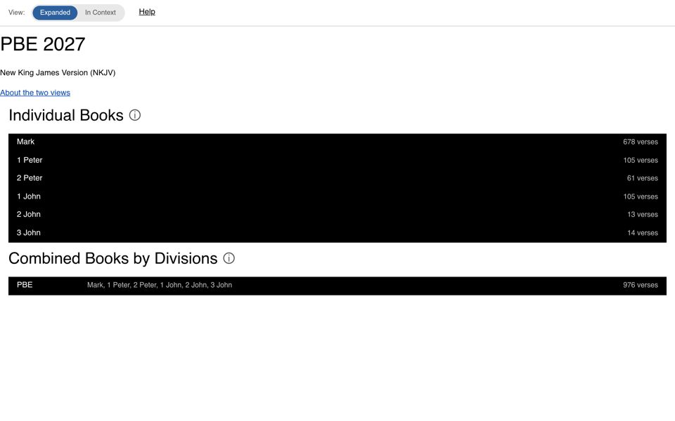
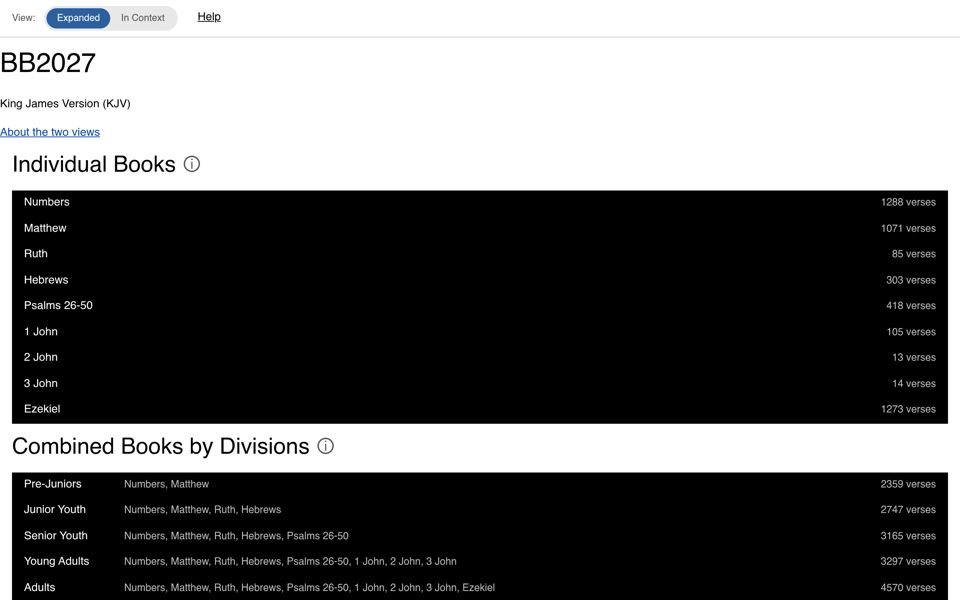
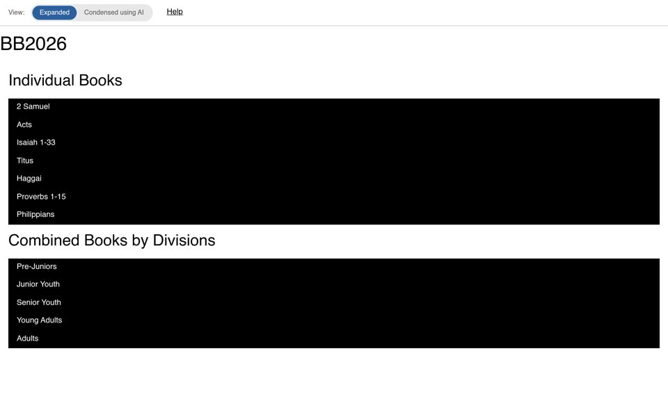
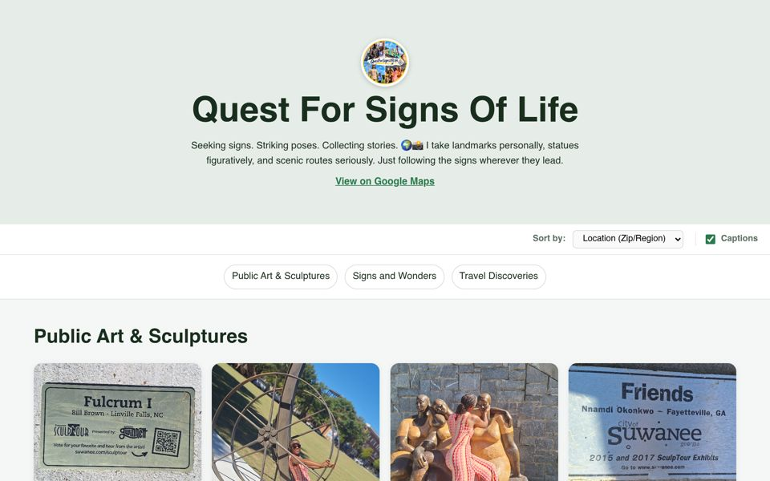

PBE 2027
2027 Pathfinder Bible Experience study tool (NKJV). Mark, 1 Peter, 2 Peter, 1 John, 2 John, 3 John.
Seeking signs. Striking poses. Collecting stories. 🌍📸 I take landmarks personally, statues figuratively, and scenic routes seriously. Just following the signs wherever they lead.

2027 Pathfinder Bible Experience study tool (NKJV). Mark, 1 Peter, 2 Peter, 1 John, 2 John, 3 John.

2027 Bible Bowl study tool (KJV). Numbers, Matthew, Ruth, Hebrews, Psalms 26-50, 1 John, 2 John, 3 John, Ezekiel.

2026 Bible Bowl study tool (KJV). 2 Samuel, Acts, Isaiah 1-33, Titus, Haggai, Proverbs 1-15, Philippians.

Signs, statues, and scenic routes. Photos and reviews from my Google Maps Local Guide travels.